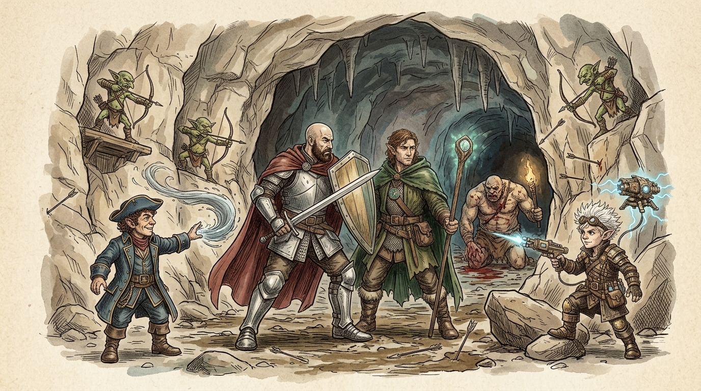
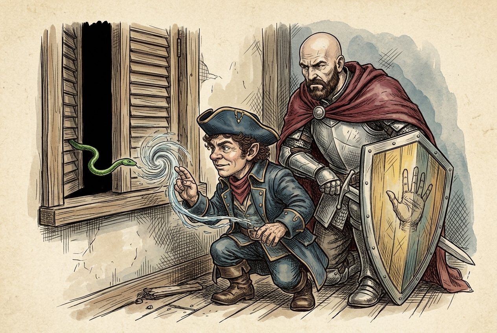
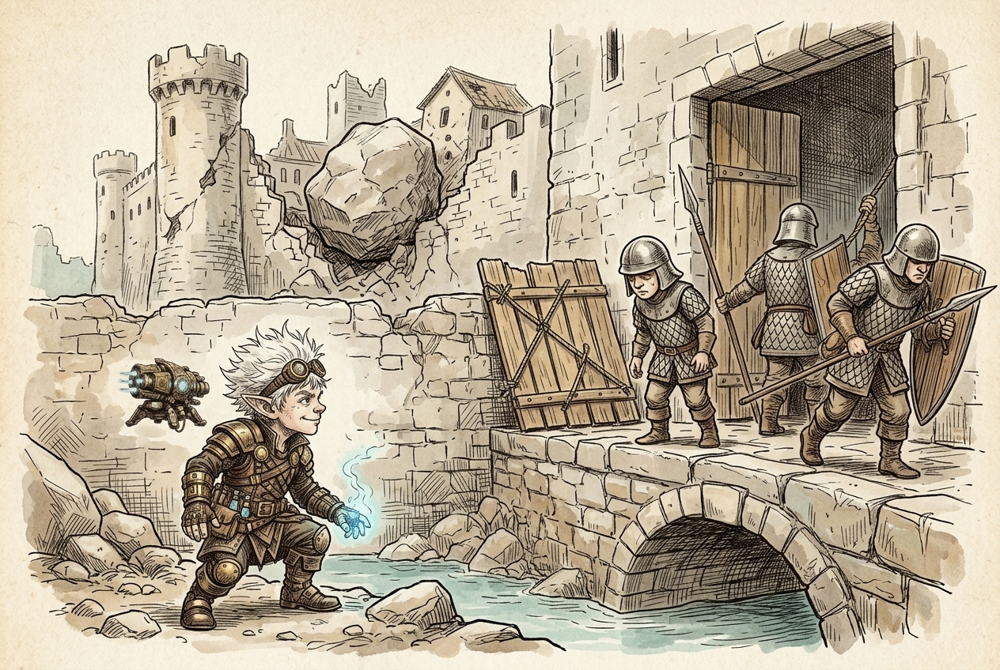
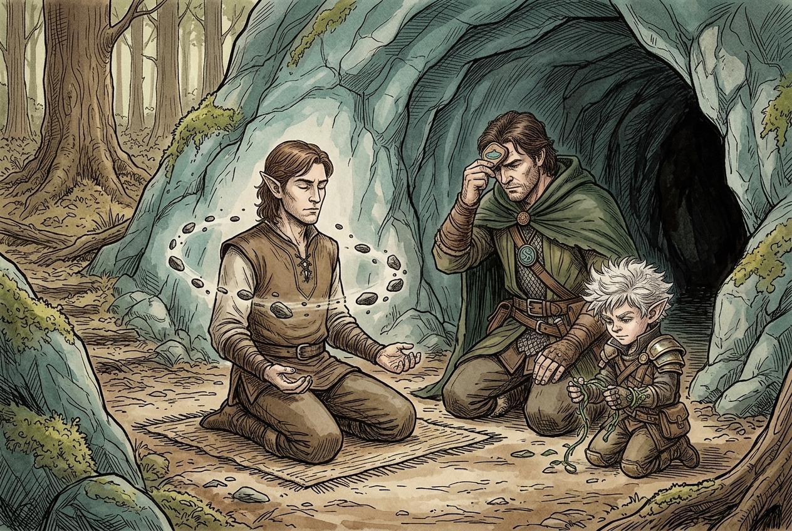
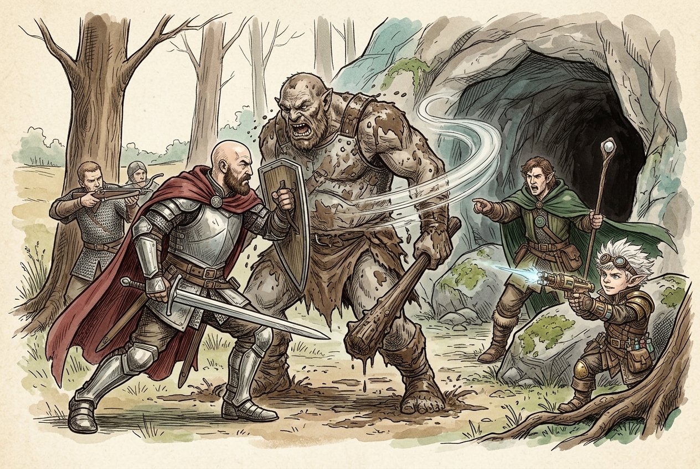
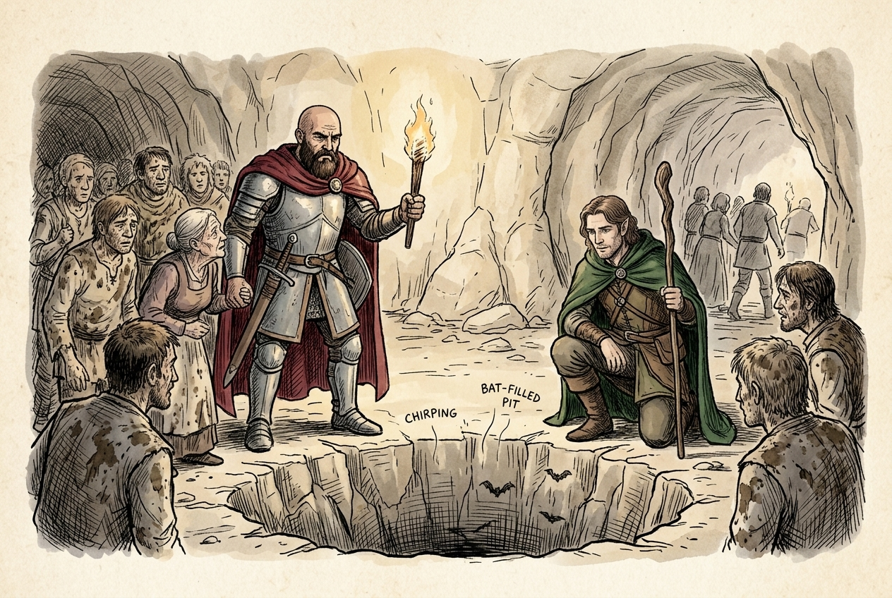

Session 2025-11-12

In brief: Nightstone's fall came clear — cloud giants dropped rocks from the sky and stole the black stone — and the crew followed the trail into Ardeep to a goblin cave, where they met a druid of the Emerald Enclave and dropped a pair of ogres to free the villagers.
The inn, the snake, and the orcs at dawn

The Crew of the True Hand bedded down in the ruined Nightstone inn, the townsfolk long since fled into the woods. Watches rotated through a quiet few hours until a small green shape pressed at the shutters — Xolkin's flying snake, nosing in the window. A spooked gesture and a sharp word sent it slinking back into the dark, and the party filed the creature away as evidence that the bandit boss upstairs was more than a common thug. By morning a band of orcs poured through the broken gate; the crew cut them down before they could reach the inn proper, and the bandits themselves, hiding, gave no help.
Soldiers on the bridge

Stepping out with the djinn-bottle still to deliver to Molak, the crew spotted four figures on the keep's bridge trying to lash a wooden door across a fifteen-foot gap — Nightstone's own soldiers, penned inside their own keep. The moment they clocked the party, they scuttled back through the door. Fiz coaxed one helmet-under-eyes recruit into talking across the moat. The tale spilled out: cloud giants had come down out of the sky, dropped boulders on the town, and carried off the great black nightstone that gave the place its name. Lady Nandor lay dead in the rubble, crushed by one of the falling stones. Her lady-in-waiting had been taken with the other captives. Nightstone had been sacked three times over — giants, goblins, orcs, and now Xolkin's bandits — and the surviving guards had no stomach left for holding it. Talk also circled back to Kella, the bounty out of Darkhope with a famous father in Darkar (Yartar was named too) and a grandfather called Teldor — a name the crew tucked away.
The elf at the cave mouth

The guards agreed to ride out with the crew and follow the tracks. A mile into Ardeep Forest, past faint smears of blood on the trail, the footprints ended at the mouth of a large cave beneath a green hill. Kneeling on a mat before it was an elf in meditation, stones drifting in slow orbit around him — mid-ritual, trying to divine what lay inside. Rather than break the spell, the crew joined it. Woz lent his cleric's focus, and together they got a rushing vision: a pull-away view of Toril, a plunge down through tunnels, and at the end a great stalactite thrumming with an evil presence.
The elf was Daniel Windraven of the Emerald Enclave — a druidic network watching the sudden movements of giants across Faerûn. He explained that cloud giants had been stealing ancient artifacts from many places, and that goblins were the sort of creatures that fell in line under bigger, meaner masters. He would not enter the cave himself; the danger was beyond him. As a parting gift he pressed a living vine bracelet onto Fiz — a Watch-token of the Enclave that would wither on the day Fiz turned enemy, and would fade in an hour or so on its own besides. He also mentioned, in passing, a white owl familiar somewhere on the wind.
Drawing Thock out of the mud

Fiz and Woz crept ahead to scout. Past the entrance the cave opened into a broad chamber: a mud pit in the middle with an ogre wallowing in it, goblins perched on stone shelves along the walls, and darkness beyond a central rock formation swallowing the rest. The pair pulled back, dropped the four soldiers as hidden bait, and shouted from the tree line. Thock lumbered out alone, club dragging, mud sliding off him. The crew and their guards took him apart in the clearing. A female ogre came next — Thock's mate, calling his name — and went down under a ballista bolt and a firebolt before she could close.
Deeper in, and the bat pit

With the ogres dead the goblins scattered deeper. The crew swept the front chambers by torchlight, working through mud, trinkets, and side passages, and cornered a knot of non-combatants — an elderly goblin woman with long grey hair among them. Intimidated but unhurt, she gave up the location of the townsfolk: the Bat Cave, off in the far passage, and a warning to mind the many bats. In the room the crew found the Nightstone villagers ringed around a deep pit that dropped into a lower chamber, the chirping of bats rising from below. They got the villagers out. One recognised the guards and asked after Lady Nandor — the news broke poorly.
Loose ends
- The stalactite at the heart of the cave still hums with evil; Windraven's divination pointed straight at it.
- Xolkin and his bandits remain in the Nightstone inn, and his flying snake now knows the crew's faces.
- The goblin boss and the deeper cave were left unexplored — the crew withdrew with the villagers rather than press on.
- The djinn-bottle for Molak is still undelivered.
- The Kella bounty (Darkhope; father in Darkar/Yartar; grandfather Teldor) is on the table if the crew wants to pull that thread.
- Daniel Windraven and the Emerald Enclave are now a friendly contact tracking giant movements across Faerûn.
Original session notes (Fiz's POV)
Sleep at the inn
Townsfolk fled into forest
Fought off orcs
Kella bounty (Darkhope)
Xolkin has flying snake, snake tried to come in window while sleeping
While leaving to deliver djinn bottle, see soldiers trying to get out of keep, they see us and run back in
Go talk to guards, cloud giants dropped rocks on village and took night stone (big black stone)
Lady Nandor is dead, crushed by stone
Kella’s dad is famous, lives in Darkar, Teldor is grandfather
Leave with guards, follow footprints, signs of scuffle, footprints lead to cave
Ardeep elf in cave casting ritual with floating stones, interrupt him, help him cast it, see deep in cave, large stalactite, evil presence, goblins took townsfolk in there, “have you heard of Emerald Enclave”, connects all druidic circles, giants have been stealing artifacts
He gives me a vine bracelet, symbol of friendship, Daniel Windraven
Woz and I sneak into cave, see lots of goblins and an ogre, draw ogre (Thock) out, kill it
Thock’s lady comes out, kill her
Explore cave, old lady goblin tells where villagers are, room with bats
Get villagers out of bat room
Raw transcript (510 chunks of auto-transcribed audio)
Lightly chunked. Expect overlap with table chatter.
Unknown So yeah, they're limping and he like kind of waves. Looks like we did it. I need to rest. But I have a question please. Will you stay and help me hold the town until more of us arrive? Hold the town?
Yes, in case there's more orcs or something. I fear I need a mad way, and three of my men have died. How many men did I leave you with, Tony? It's Kella, me, and these two handsome fellows right here. Should we ride him? Of course.
I do appreciate that kind of joke. No, seriously, what are you carrying? I'm just kidding. I think we have an important delivery to make. I think we should rest before we come to the decision. We'll hang out here for a little while, for sure.
What is it, a long rest? Eight hours? Eight hours. We'll stay for eight hours and see how things shake out. Can we barricade ourselves when we're safe? I don't know that I trust these guys.
And he's got reinforcements coming. You sound pretty weak. I know, but he's got reinforcements coming. I could like could we go and sleep in the church do you need a yeah I will just rest I'm going to stay in I think there are a couple of good beds let's get a good night's sleep Okay, so there's like several rooms that are unoccupied. Everything's pretty messed up from all of the goblins coming through and rummaging things. But you guys find the two big rooms that have several beds.
It'd be comfortable to stay in. Door lock. The doors do latch. They latch shut. They have like a little wooden bar that falls over the... Each room?
Each room. How about the end? Latch the front. They actually get the benefit of the lights. They, um... They, um...
Even the door is still intact. For the end? Yeah, the door is still in pretty good shape. There's a big, heavy double door set, and on the inside there's a bar that fits over the door. Are any of the rooms big enough for the four of us or is it max two for the room? Let me actually look at the habit for this.
Can we get the master suite? Are there bunk beds? I love the detail. Otherwise I can just roll for it. Say even yes. All one room.
Odd yes, but someone would absolutely go on the floor. Oh That's up to you guys as long as you rest eight hours, but yeah We're here till morning anyway. Time is meaningless. Keep watch. Okay. It's two hours.
It's the course of the game. So what's the watch rotation? Who wants it? I'll go first. You go first. I'll second.
You guys are each going to take like a 30-minute watch? Rotate it around for 10 hours? No, I think two hours. Two hour watch. Two hour watch? Yeah, that's enough.
That works. Just slide that. In my head, you had to watch an additional two hours. Some people are just interrupting or just taking like four and four hours. Okay. Two and a half hours?
First watch. Two and two thirty times. Just quiet. Nothing happens. I'm going to sleep, guys. I'm going to take the next one.
I'll take the next one. Next watch. Nothing happened. You went next watch or you're... Yeah. Okay, and you...
Tiamat appears. So, um... On your watch, so I'm gonna have you make a perception check because you're like actively watching. *laughs* *laughter* So it's 14, so 19? 19! Okay, you see a small figure in the darkness outside the window, and it's like pressing against the window, and the window cracks open slightly, and what you see is a snake, A small green snake pushing its way into the window.
So this is my opportunity. Roll for phobia. No, no, no, no. What'd you say? Roll for phobia. I would like to cast speaker.
Nice. Okay. Nice. Nice. Nice. Nice.
So, you can now speak to animals, they can understand you, and you can understand the... Is that just a you? Oh, it's a... Oh, great, that I know. I wish it's 10 minutes, peace. Oh, it's working again.
If it stops, then I'll stick on that. Would you like it? ok so uh... you've... so um... the components that spell verbal, somatic material SN BIS B-S-N wait wait wait...
V-S verbal and somatic gesture and a sound. When you make the sound, the snake is running away. You have a chance to say something to him, but you clearly spooked him and he's gonna run away. Can you kill it? I don't know. Could be a good sign.
I guess I'll just leave it be. Say hey if you want. Wait, so it ran away outside of him, right? Yeah, yeah, yeah. It was trying to get into the window. You guys are up in the second story, but all the rooms are in the second floor.
Popped on the window, post open, post its head in, you're like, presto change-o abracadabra, and it's the boss. Okay. So yeah, I was like, "What's up?" "What's up?" I was hoping it would be a little less, more emotional, so you'd be like, freaking it out. I scared away, it's fine. That's all that happened today. Okay, so the final watch.
Hey, is there anything? I just woke up. I'm groggy. Anything happen? Yeah, snakes tried to claim it. They tried to talk to me.
They ran away. Okay. Well, here we go. They ran away. And your watch is also quiet. Okay.
Okay, so you guys, long rest of it. Leveled up. Leveled up. I think it's actually locked the window. It's cold when we're at. So now we're all level three.
It's cold when we're at? It's like a nice spring. Yeah, it's a little chilly at night. It's pretty cold. But there's a hearth that I presume you lit. You didn't say you locked the window.
That's true. Cool, okay, so you guys are in the inn, waking up, you guys feel pretty hungry. Mmm, yeah. Okay, the other first friend woke up. Are you guys early risers? Yeah, well, we ship people.
Yeah, actually you can hear like sounds coming from downstairs, sound like people are out. Wander down and see if there's any food left in the kitchen. Yeah, there's like two of the guys are in there and they're like, looks like they're already cooking stuff. Taking food from the kitchen. Same idea. So you guys can all help yourself and eat.
Ask them what they're cooking. Looks like some kind of meat. Like a big just tonked meat. And he's just like frying it in a pan and it's like a sweet-reader to the rack. Oh yeah. It's gonna take forever.
His food safety is... It's gonna get loose for him. I'm not saying I don't think of it. But yeah, you guys are fed and all that, so I'm worried about that for the day. The rule is, by the way, you have to have like one food and a gallon of water every day. Is there water here?
Yeah. Usually, like when you're in town at a resting place, it's just assumed that you can access for those things. I feel my water skin. You're sort of in a... Yeah. Somebody ambiguous.
I asked this guy when he thinks his buddies are gonna... In the day. Today? Today? Today. Today.
How many? Oh, a lot. A lot. You don't know. Like a lot a lot? Or a little a lot?
How much a lot? You know, you're asking a lot of questions. I think I'd defer any questions to the boss. Boss is not here. He's upstairs. What happened?
Well, a bunch of orcs poured in. through the gate fought back. They were frankly going to slaughter us and then it sounded like the blue horn and they all ran away. So, thank the stars. Thank us. We were about to suffer the same fate.
We chased them off. Special orcs? Like, maybe doing That's pretty cool. Not that I saw. All the ones that came in on the other side of the game were just the ones that were shot. How many were on that side?
Boy, you know it was all kind of a blur. I don't know, six or seven? Did you kill any of them? Not in the round. You know what? I'm just wondering.
They could be coming back. Three of my friends just died. Can you give me a break? All right. Is there any reason we need to stick around? You good?
You feeling better, buddy? We got a delivery to make. We got business to transact with some people who used to be in this town. I can't stop you. I wish you guys would help us out. What do you need help?
We got you through the night. Oh, I mean, if you're in the town, I don't know. We'll probably be fine in the town. I don't know shit guys. I'm just a... I'm just a...
I'm just a... You're just the cook. Okay. Well, I'm now the cook. You are the cook. I say it's just amongst us.
You see in my youth. What? Good breakfast, by the way. Thank you. I say it's just amongst us, but do we want to wait for the boss to wake up? Or should we...
I don't know why. What are we waiting for here? I think we just go. It's not our fight. Yeah. Unless we want to rifle through the town.
I feel like they already did that. There's going to be there was like that keep that was the bridge was broken. I don't know. Are we a looting type? I'm a looting type. Why not?
Well, here's the thing. We've got to make a delivery. A delivery to people who live in this town. So maybe if we show up with a bunch of their crap, it's not a good look. Just don't steal like feather nets and stuff. Help me what you can steal.
Well, should we ask if there's an incentive for us to stay and help them? Or we can say we'll go make our delivery and then come with checks. Because we don't have anything else. What else do we have? We've got to go. We got our ship.
Probably want another ship. They're trying to take the keep, right? Yeah. The plan was to leave for it. Yeah. They're planning to take over the team.
Yeah. Do we remember seeing any ships around the area? Like docked anywhere by the keep or anything? There's no boats here. I'm sure they're not sure. Yeah.
I mean like, you know, the near of the keep was, it and that's a body of water. It's just a little rope. It's 30 feet deep, so it's pretty deep, but it's not very wide. I suppose there could be a rowboat or something like that in it, but if you want there to be a rowboat, there's a chance that there's one. Overnight I learned how to make a cap of water boots, so if you want to explore them. It will take me an hour to put it together.
Just an idea. We could go dive here. We might need to use that at some point. It's a good one ever. Just letting you know. So if I remember recording, when we were first guy here, it was pretty much empty.
There was a bunch of tracks going into the woods. That's probably the people that were from here that took off. So, orcs came out with black, and the orcs took out. Did they go in the same direction, or was it a different direction? They're talking about the footprints? Those go up north and then forth.
And the orcs went to the orcs? They went in a different direction. They went, I don't know, correctly to their own. It seems like it was quite a few people that took out. It's like an exodus, right? People fled the city.
I'm leaning on throwing and fighting at that party. Yeah, Kela gave you guys some information too, which was that essentially Moloch led everyone out of the town. Wait, who did it? The guy you're delivering to. He led everyone out of the town? Yeah, like when the giant started attacking, he just took command.
What's his name? Moloch? Moloch. M-O-L-A-K. Yeah! Yeah!
is inspected and from what color culture. - That's show up maybe there's an alternative narrative or we just abandon the town so we want to get rid of this genie too and this guy will in theory give us money if he has any with him But he might not have any. He's probably going to need to be able to stay around the town. Where you guys right now? Still in the inn? Yeah.
Unless we're cutting ties with Moloch and... Do we have a lead? Where do we go? Follow the footsteps. Up to the town up north, Waterdeep, right? There's a trail of footprints.
Unless we just want to turn into pirates. I do think if we go, we should go now for the big boss, except because he might tell his guys to... ...do them still to get it. For his larger force that people are. The larger force, yeah. Just give us more time to avoid them.
So these guys took over, or their intent was to take over the town. It seems like they were kind of opportunists. Like, the town dropped because of the... Did he give a reason for coming back to this town? Yes. Did he give a reason for coming back to this town?
He told you he was looking to collect a bounty on Kela. That's where he told you initially. Oh, so Kela's supposed to be like his prisoner? What's this guy's name again? Thorkin So he told you guys that he was there to capture But then when he came in you know, they're obviously lovers Yeah. Seems like he's easy to tell stories.
Like, make things up out of convenience. Yeah, I don't trust him. Let's bail. Let's get out of here. Should we kill them all first? They're weak.
The boss is sleeping. We should go kill him in his sleep. Are we going murder huddle right away? We're having this discussion just amongst ourselves right now. I'm not going to... Okay.
Alright, yeah, let's go. Let's get out of here. Yeah, if you guys say things as an asylum, assume that you knew that there wasn't anyone here trying to be able to. The only exception is maybe to be secretly listening. We got rid of that snake. Snake's not listening.
Snake knows too much. You gotta find that snake's guess. Right. Yeah, when we leave, we should check the snake's guess. Do you guys remember a snake from the last episode? There was a snake.
I don't know. Does? Yes. Reminder? Dolkin had a pet flying snake. Flying?
Ohhhh. And I'm only telling you this because it's been so long since I've mentioned. How do you spell his name? X-O-L-K-I-N. X-O-L-K-I-N. Was it Winged when he saw it or did not have wings?
We were on the second floor, we were on the second story and it was pushing us to it. Oh, we were on the second story. Should we ask Zolkin about his little pet? It seemed like it. Should we? I'm ready to move on.
So that looks like the snake. Uh, yeah. I thought it would be pretty obvious. That's what happens when you go six weeks. Yeah. Alright.
Some of you are taking good notes though. name three times. We were so busy doing that. I'm gonna write down that he has a pet state. Okay yeah let's go. We don't want to just ask him about his snake.
We'll stop back see how you guys are doing. We're not asking about his snake first. Confusing but I'm not gonna. I have a feeling of the bad. That's kind of where my head is. Huh?
Yeah. Token's the leader, man. He's in control. Yeah. So he's not communicata right now. Oh, okay.
I think it's a... Oh, it's his thing, okay. Like, I don't... I think if you come back, I don't think he's gonna start stabbing us. I think he's just completely like... I think he's...
I think they're like more like, uh... Like I said, opportunist. I'm being satisfied by now. I could be wrong, but... It looks like they had a plan to screw up this town. Right, but they already got it.
The town's screwed over. They're basically like, it's our town now, so if you're okay with that, we'll be okay with that. What do we know about flying snakes? Make a history check. It's a flying snake, so can I make an arcana check? Um, this...
oh, if you want to know about, like, the creature, sure. I'll give you nature or... Have a negative one. Nature or... plus five dollars. Thirteen.
Thirteen? Arcana? So a flying snake is a natural creature, meaning like it is a beast, like it has a mind of a wolf, but it was magically modified somehow to be given wings and flying. But this is a thing that I wouldn't be too surprised to hear. Well, make a history share. Is it like the least dragon?
No, it wasn't a dragon. Twelve. Twelve. This isn't common knowledge, so... Hey. Not uh...
It's weird. It's that flying snake, right guys? Hey, man. You sleep out of the woods? Alright. We got something to deliver.
Let's go make our delivery. Alright, so when you guys step out of the inn, you have like a clear shot of the keep. And on the keep, on the bridge, there's four people in soldiers' uniform. And it looks like they're like placing some kind of door, a big piece of wood, it's just a big door, across the bridge to try and like form a bridge. but they see you guys come out of the inn, there's just like a clear view between you two, and you see like their mouth open. And they drop the door, it slides down, falls into the water, and they all run into the inn.
So this is the key that's to the north, right? It's on the east side of town. Here, I can show you guys a mouth again. No, these guys look like they're soldiers of the town. Okay, so they may be trapped in the keep. Oh, on the south, you're right.
Oh, south? Here is the map. So they seem like they're soldiers from the town originally. So the keep is here. It's like this island on the south, and there's a bridge that connects it. It's super steep, so there's like no way to...
I mean, it'd be really, really hard to climb it. It wouldn't be impossible, but... Yeah, and you saw them just now trying to make like a makeshift bridge. And once they realized that there's still people here, they ran back in. Probably Molex people trying to get out. Probably would be favorable for us to help them.
Just trying to. These are like soldiers, though. This is the keep. Theory, they are. But there's only four of them, and there are lots of people coming. They don't know that.
They're just... They're just... They're just... They're just... They even worked. Arrow to the knee.
They used to make a... It's a weird direction. So they were trying to put a bridge... They were trying to make a bridge from the keep to the temple. They don't necessarily know that it's open. It's true.
So they ran back into the keep? Ran back into the keep. But that means that the keep is kind of an island in itself, right? Yeah. There's like a big... It's like a big castle.
But it's been pretty demolished by boulders. They've been in the air, so they've been watching. Should we go... You don't know what they've been doing. I'll figure it out. Well, here's the thing, so...
Does Zulkin and his boys know about these soldiers? I don't know. Should we go back in and say, "Hey, do you know anything about any other soldiers around here?" So we could do that. But then they'd say something like that. We don't trust soldiers. Why haven't we seen you?
I mean, get their answer. Go talk to the soldiers. Or go talk to the soldiers. Yeah. You can use your mage hand to fix that bridge. Oh, there you go.
If they're trying to port over the door, it's not that wide. How wide is it? 15 pounds. The gap where I can give you the 10. I believe you. In TV shows, they always make us in the morning.
That's not much. Time for a fireball. Nice. Happy. Who cares? There's a win.
There's a win. All right. Don't worry. I'll just want to tackle. 10 pounds. That's the limit.
But I do have a way to like Like You send one way messages I think UDP You send UDP packets I'm gonna assume it's a 10 foot gap So it's 10 feet Well, if we want to talk to them and not have our buddies in the inn know, how far is it from the edge of the moat to the inn? Could we have a conversation? Oh, no, it's not very close. It's like across the town. We don't have to go over there. Is this the inn here?
We don't see anybody else around there. The inn is here. It's like the northeast side of town. I said we go to at least the moat. Do we have the fog thing? I have the fog.
I don't think we don't need to use them. We just go across them. I think we just go to the keep. Say we're going to go. Go to the keep. Go take a leak in the river.
It's, all right, it's actually a 15-foot gap plus 5 feet up. So it's 20 feet from the edge edge of the gap. 15 feet. So we need to do the cosine. We need to yell across. Yeah, we can yell across that game.
Yeah. Every time you try, would they hear us at the end? We'd yell at the coast. I don't think so, because they're... We don't have to speak that loud, honestly. It's like talking to the person I'm here.
Successfully kicked you out of it. I can always put a six-second recorded message on a rocket. Yep, yep. Maybe hand it in there. I think we can just... All right.
You guys going down there, or you... Just moving on. Yeah, we're going down there. Okay. Okay, you go down, you're now standing at the foot of this broken bridge. It's a staircase up, and you see there's a big section missing out of the middle.
20 foot gap. Across, across. Ahoy! We have a delivery for... Moloch? Moloch.
One of them pokes their head out. And you can see the looks of this guy. He's like wearing armor that's like slightly too big like that way over his head This is a good soldier Or he's not a soldier What? Does he look drunk? We need no harm Are you guys here to attack the village? Are you here to help?
here to help can you help us get across this bridge probably i pull out my rope wait let's ask why do they want to get across the bridge because they're stuck we're trapped up here okay should we ask you what they know what's going on we'll figure out if they know what what happened to the town what happened to the town some cloud giants came they dropped a bunch of boulders on the city and they took the night stone what's that do you really want to keep yelling like this how many how many are you guys i don't know if i should tell you that Well, you can clearly see, he can see us, right? We're just trying to make a delivery. Well, you can see us, we're four people. We just want to know how many people we are. We need to know how much weight to account for. A bigger one, stand up.
There's four of us! Okay. All right. You think you can cross on a rope? I can try! I don't know if we have.
What is there? Are there any, like, it's 25 feet? 20 20 20 feet probably not a lot of 20 foot planks laying around i draw my sword six no bonus on that but that is there's the nightstone the nightstone they they all go back inside we can get you out of there We'll figure it out. Alright. Good luck. There's a whole mess of dudes who are coming for your heads.
Wait, what? I said there's a whole bunch of bandits here coming to take your key by force. So you can either cooperate with us or die with their hand. Make an intimidation check. 13. Yeah, these guys are pretty motivated by fear.
I don't think we've got a choice. All right. Looks like we've got no choice. I'll do as you say. If you can help us across. While we were resting, I made a rope.
What's it called? What is it called? The rope of climbing. Okay, what's that do? That it can cause to extend out and tie itself off to something up to 60 feet across. Okay.
So, is the idea for them to climb down the rope and then just like cross the water? We're just going to do this. I was thinking they were just shimmy. Shimmy across the rope. Shimmy across? I don't know.
I'm just trying to picture in my head how hard that is. Or like with their legs. If they need to make a skill check to do it, or... I think they would. I think it's going to require an athletics check when we get across. Well, if there's other ideas...
But it's 60 feet, and we need to go 20 feet, right? Yeah. So we got some... We got some loose. You can basically get two ropes. Get two strands across.
One rope. I know, but you can... You know what I'm saying? We can either cut it, or you can double back. We're not cutting my rope. Worked a long time on this thing.
Are you doubling it? You can double it up. I'll give him advantage for the double. Okay, but they get plus zero. I did a letter of it. And I'm giving, it's a DC 13 across.
First guy makes it. Second one makes it. Third one falls in the water. Wait, 13? Is he 13? Are those 9?
Yeah, those are 9. So they both made it? No, that one fell. It's an advantage, so you only get the third guy. And the second one falls. So two of them fall.
And we established they're going to take a D6 from that. So one guy takes one. One of them's hurt pretty badly. How far did they fall? They're just very clumsy. They have very clumsy palms.
Always, yeah. I have shaped water. Can I use that as a reaction to soften their fall? Yeah. Yeah, that's a cool idea. Okay, so then, uh, since that spell's not really a reaction, I'm gonna have you make an arcana check.
Okay. Give me ten or higher, and you can get there. Come on! Eight. So he just puts them in half. And they're falling, and he just, like...
Actually, I plus zero to arcana because of that intelligence. That charisma case, so... Yeah, well, good time. One guy is super injured. Do you have any hit points? He looks like, you know, just like laying there injured on the bank and the other person's like tending to him and kind of like now trying to figure out how they should go across or help their friends or they should go.
We can get him. Can you try the rope again? Feet it down to them now. Climb up. Maybe this is two goes. Make sure that the last guy, you tie the rope around him so that people hold up.
He's injured. Mechanical rope. Okay. We don't have rope. Okay. Throw rope down in the water.
They get up. There, there. One of them is kind of in. Well, I guess you were here to help us after all. I was never suspicious. All right.
So now we can speak in a normal voice. We should. Yeah. We should maybe get out of here. But anybody comes out of that inn. Do we want to know about the nightstone?
Bandits? There are bandits in the inn right now. There's bandits in the inn right now. I'm going to be honest, you all look a bit rough yourselves. Well, we were seeing this. We were in a shipwreck.
We just lost our ship off. I'm in no position to make arguments. Sounds like bullshit. I just assumed they did. Sorry, we haven't had time to do that. We were entertaining the idea of bandits.
Yeah, it's important. Okay. Can we walk and talk? Like, get out of here? Ask him a few questions on the way. Leave the village?
I think we should. What about the goblins? The goblins are gone. They fled. Yeah. They took care of the goblins.
I haven't seen anything. They missed the whole orc. They took care of the orcs. I don't know if you heard any of that That's what all that noise was So they were hiding They were hiding from the Giants And the goblins were just opportunists first Is that kind of the deal? No We were also stricken by grief We should have this conversation somewhere Lady Nandar? Lady Nandar?
She's now dead? What's Moloch? She's dead. She lays in the keeper. Moloch the innkeeper. Yeah.
I already have a chance to... Oh, I was trying to figure out what the relationship between all these people are. Lady Nandar? Is there a king Nandar? Lady Nandar is the lady. She runs the town.
Oh, okay. Now there's her... by the Giants yes Boulder smashed right through Cruster It's definitely gruesome. So are we trying to do something? Kill it. Why would I leave the village?
Poor choice. Because everybody else left. Everybody else is gone. I think the giant attack. So what's your plan with the man? These bandits are coming.
Where'd everybody go? Have you ever heard the name Zolkin? No. Okay. What about this lady? Kella, the Black Network.
Of course, the Zantarum. The Zantarum. Not a fan? You got beef with them? They're the worst. You say the Black Network?
Yeah, that's what the... That's what Zolkin is. So, how about Teller? You heard the name of Teller? I heard there was a bounty on her. Teller, it's a common name.
I figured if he had a bounty on her, then... Tell me a personal note. Do we know the last name? I don't know. I don't think we know. So you should come with us, because the only people here are Zolkin and his black network boys.
Everyone else is gone Everyone else is gone Dark Hope Dark Hope family Name is Bandit She's here in our town I think so You think it's her Oh man, we really failed this town What can you tell us about those people? Blackboard Zolkin and Kella Well, I'm no expert I'm just a common soul, common town guard Having been out of the north But her poster is everywhere I went to Waterdeep on a holiday Several ten days ago And her poster is every Saturday Okay She's going to tour with her For what? Villainy? Just in general. Her name's Dark Hope. Dark Hope?
Yeah. Stealing some children. Okay. If you don't know any specifics. I was drinking a lot on this trip. All right, all right.
I do know that her dad is famous. Her dad is famous. And lives in the town of Yartar. They've been able to keep their noses clean We're leaving if you want to stay. Torum here has a good three days of service. And on his second day, the town got destroyed.
So, saying if it comes to a battle, it doesn't look good. So you guys should get out of here, too. So we want to abandon the town together. You guys look like the fighting type. Yeah. Let's go find Soberkid.
whatever the name is okay i guess that's our choice we will go with you do you know where they are do you know where the villagers have gone there was tracks going to the north okay do you know this area maybe they've gone to the elves for help relationship with elves is not good so that would be a surprise but desperate times desperate times indeed I think tell his dad's father's name. What color are the curtains? I... This guy turns my shirt. You should make sure. You need to do a text document.
Yeah, sure. Do you have a mix? Do you have a mix? Yes! Telldorn. Telldorn.
I just finally remembered. No, I'm sorry. That's a I'm going to play a great play Can you guys walk? Can your friend here walk who took a tumble there? How's your leg? I'm alright.
Alright, let's go. Alright. Well, I guess we'll have to lower the gate. But I know how to do it. We should lower the gate. The drawbridge?
Can we go through the gap to hold the wall? Is there water or is there like Well, it's also in rocks like covering the Yorks got across. Yeah, how did the Yorks get across? So you guys saw them. It's just, they just swam across. It's 30 feet deep.
Well, you don't know how to do it. It's deep, but deep enough for swimming. But far enough, it's not like 30. It's, I think, 30 feet across. We told you guys we were leaving. And they're wearing armor, so...
So you would say that. They're all braided. Yeah, yeah. Lower the bridge. Let's roll. There are only four of the bandits here.
There's just four of them? Yeah. Zulkin. There's a flying snake. What if we just run him out of town? Would you back me up?
Well, they're injured The only problem is these got more people Lots I don't think we'd be able to mount much of a defense. So we set especially Since you say there's a hole in the wall. Yeah. Yeah. I think we'd be better off with Moloch. He tends to know what to do with these situations.
Alright. Very, uh, sensible. Let's split. Let's get out. Don't be surprised, him and I sound a lot alike. Alright.
Alright, so we're lowering the bridge? Lowering the bridge. Yeah. *Sings* I just hope the four who are in the chat I guess they're flying snakes though I'll play that game Raise it back up We have to use mage hand or something to raise it back up I can do that though. We can leave a note that says, you know, went for a walk. I raised the thing.
Okay, send my little mechanical birdie over there. Good. Okay. You guys, uh... Okay, so what, you guys go south now? Right.
Follow the footsteps, right? Turn a compass and go around the bit. Oh, it's north, even the footsteps. Follow the town's folks. Alright, so the footsteps are clear to follow. There's so many tracks that it's like plain and obvious which way to go and to follow the tracks.
Are any of you like studying the tracks? Just roll a survival check. We can all do it? Yeah. Anyone who's studying the traffic as you travel. 13.
1. I'm pretty good. You start walking the wrong way. I got 15. 15. Okay, well, 15 is what I'm looking for.
15. Okay, you see that as you get closer to the woods, there are more footsteps that come from the sides. There are signs of a scuffle and then the tracks change direction and turn sharply into the woods. It is not a person but it is possible to change the house. It just means that it was heading in a direction that was pivoted after whatever altercation. Exactly.
Do we see anything like blood or anything in the area indicating... Yeah. Perception check. There would be some blood. Yeah. You saw some blood.
But no bodies or anything like that. Okay. We just keep following the tracks. Okay. What are our options? Yeah.
Alright, so you guys follow the trail into the woods. And after you've been walking for a total of about a mile, you come across. The footsteps obviously lead into the mouth of a large cave that sits in front of a big green hill. And before the cave, you see there is some kind of man. and he's on his knees on like a kind of mat. And you see he's like, well you see him from behind, but he's sitting in like a meditative pose and he has some floating rocks in front of him.
- He said some kind of man. Is he like a man? - He's clearly an elf. open up the genie bottle? *laughter* take this any other option? so they didn't have a we're like a fair distance away standing?
yeah yeah he's like a whisperer to the guards he's just one of them arty fellows so this is where I think I think it seems like that's the where we want to go I didn't know but there are details Does anybody speak Elvish or anything? Yeah, I think I do. No, I don't. I do. It might be better than speaking this language. I also speak Elvish.
What do we know about these people first? They are in the Arctic Woods. That makes sense. Do we know anything else? What do we know about these Elves? About these Elves in particular?
It'd be very uncommon knowledge, but it's possible. Because none of us are from this area. That's not going to do it. Mind. Where are you rolling? History.
To see if I know anything about these elves. Are they warlike? Are they hostile to... So you have gathered that there's tension between the villagers of Nightstone and the Hardy's house. But I wonder if they're just hostile to everything. Or would they prefer the new owners of the keep?
If they're not happy with villagers, but the new people are worse, they may not be as against having a conversation about it. And then we really don't have much skin in the game, so we can just have the conversation, and if they're not interested in helping, he's in. I think we all know. I mean, if they know the villagers, they can speak common, right? Around the elf is like a clearing, like he's there, I tell if he's alone. I think my character has help.
Makeup or second check. Pretty odd. 21. 21, wow. Yeah, so you don't detect anyone else around. He seems to be sitting at quite a distance from the opening of the case.
But he also seems like he's in a trance and just like not tuned in to what's going on around him. And he's like really focused on this spell that he's doing, which appears to be some sort of ritual that he's casting. Can I figure out what that spell might be based on what he's doing? I'd say with an arcana check. Not very good at those, but... I am.
18 actually 20 So he appears to be casting Some kind of divination ritual Like he's trying to learn Something or divine something About this cave But that's really as much as you can tell By observing the spell From the outside We should probably interrupt Pissed as he would be Do we know like the spell Can we interrupt it Does that make him start over? Like he's going to be mad that we've done this? You do know that. Now that you asked, you do know that that is what would happen. We just walked past him. Just walk past him.
Don't mind us. I need a big message to rock on his head. Good luck with your divinations. Cheerio. I mean, there's eight. Okay, so you guys walk past him.
We don't even want to... Hey, what's up, bud? What are you doing? We just talked about this. We don't know if we just started. You can.
You don't have to get permission from them. Do whatever you want to do. I rolled a 20. Does it sound like you just started? Does it sound like you just started the spell? Yeah.
Well, you know that the whole spell wouldn't take more than 10 minutes. Oh, okay. Just interrupt. Just interrupt. Go talk to him. Spell slot?
I don't know. Maybe it does. Caster's ritual, it doesn't take a spell slot, right? Well, from your 21, you know that he's casting a ritual. It's not using a spell slot. Yeah.
So now we're gonna... 'Cause that's a thing in this world. So he's upset. Well, it's not using... We know you don't need a lot of rest. The weave.
Thank you. Yeah. Okay. *Hem, heee Yes, yes, you could help me. Perhaps. Aid me in this ritual.
Take my hand. The stones begin levitating again. We don't even say anything. You can make an arcana or a nature check to help him cast this ritual. *laughs* *laughs* I'm pretty good at the arcane arts. I know my Never seen in your accent 24 24 okay, so Suddenly you witness And like from a very like a mile high view it turns towards Toral the planet you're on and then like zooms way in to where you are and then into the cave and then It's like too fast to really make out what's going on, but you go through a series of tunnels and then there you see a Stalactite and then you feel It just is this sense of fear this overwhelming sense of fear and anguish and darkness and you hear the sounds and screams of all of the all of the people that have died from this like evil thing that exists We should go.
And this is here. Thank you for your assistance. I've come a long way. Well, not that long. I'm from the army. Yeah.
I'm holding my cleric emblem tail there while this is all going on. Good job. You're helping. Good job. You're helping. Good job.
This cave portents death. There's a great scene. I saw that. A stalactite? Of evil? I guess so.
What can you tell us about this cave? Are there any? Are there any people going into the cave? I relay all this. This is where all the people are at. Oh, yes.
All the villagers from the town are now in the cave. They went inside the cave. And I say good riddance. Good riddance? Yes. If you've met them.
What's your beef with them? Our beef with them? Yes. It was they. A beast can go both ways. What do they start?
I'm not saying you start. They were not to tread upon this. Yet the Nandar family has made it their personal playground. And now all the water given nobils come. And they tread on our trees. They chop down our trees.
They kill our beasts. They burn things. They leave litter everywhere. That's the worst. So we would prefer not to have a human settlement nearby, no offense. Yeah.
Yeah, I'm not familiar. I've never seen him litter a while. Maybe once, but not. Very good. Well, I have come here actually to divine the nature of this dark, evil presence. Did your people go in with the townsfolk?
No. Why did they go in there? Who? The townsfolk? Oh, they were captured by goblins. Oh, God damn it.
It's for goblins. Right. How do you feel about goblins? I mean, we drove them out of our area. That's why they're here, so. But they're here.
I mean, this is part of the nightstone. Ardee Village is deeper, deeper in the world. This is like barely even the woods. I thought I called these the Ardee Woods. This is a burrow of the nightstone. But ourselves, we don't see things in such a world.
It's like San Diego, San Diego County. It's confused, actually. This is our circle. It's like Sinti. No, as long as the goblins stay in the cave. In the cave.
Oh, this is very cave. It is now, I guess. So we're still with the soldiers, right? No, we don't like goblins. Didn't the soldiers mention that the nightstone was stolen by the goblins? No, by the giants.
By the giants. Okay. What was the nightstone again? We never understood. Yeah, what's this nightstone? Do you know what the nightstone is?
Yeah, we asked the cards. I can answer that. It's a big black rock. It's been in the center of town since I was a boy. I don't really know what it is or what it does or why it's there. None of us ever did.
People told all kinds of stories, but, you know, they all know. Have you heard of this nightstone? The nightstone. There's a big black stone in the center of a town of the same name. Okay. Are you familiar with the black stone?
My belief is that it has some importance to the giants. Yes. So, my class, not the RD clouds, but I'm part of a greater circle, and we've been tracking giant movements. And the cloud giants have done this kind of thing, been taking ancient artifacts from different places. I don't know why. The Giants?
Doubtful? You mean the evil? Yeah, the big stalactite thing. No. I mean, maybe. I don't know.
Are the goblins friends or allies with the Giants? Do we know that? What did we know? I can tell you what I know about goblins in general, which is that they tend to take orders from whoever's bigger and stronger. So it's not uncommon for giants, especially fire giants, to take goblins as servants, slaves, whatever. Okay.
What about cloud giants? You see, the giants have all been in hiding for so long. It's just as of recent, they've made these appearances. But cloud giants, they don't seem the same sort of... They don't have the same lowness as the goblins. But maybe.
Maybe. So Blackstone, since we've been here, has been sacked by giants, goblins, orcs, fans. I'd say that town's pretty unlucky. I think there's a curse on it. Well, maybe it's better to just let it be done. And game.
And roll credits. Good, guys. Good. Did you see when we did the divination? Did we saw that? Did we see goblins when they were zooming in through the caves and stuff?
Yeah, but I see... I heard voices. You saw some near the entrance, but you did notice that the area around this thing was... There was no other light. Did I see a townsfolk in the cave? You didn't see a townsfolk.
No. Did we have... You saw, like, glintzes of goblins, but you didn't get enough to, like, get an idea of the layout or anything. Oh, so we don't have a layout. But you did get a sense of those all those there. So this guy says he's tracking giants, and tracking the giants because they're looking for artifacts or artifacts?
Is that what you said? Have you heard of the Emerald Onclave? Emerald Onclave? I don't know if I heard of the Emerald Onclave. You probably would have. Especially like being connected to Eldath.
Let's roll a history check. I'll give you advantage. for your kind of druidic outlander research. - I got a 14. - 14, so yeah, these are like-- - Wait, wait, wait, wait, but it's a history check. So it's my, it's 13 hours.
- What are you good at? - Actually, yeah, so you know that they're kind of like, um, God, I don't even say this, they're like the nature faction. You know, sort of like the... So like Druids are in... Druids have these things called circles, which is like a witch's coven, but a Druidic circle. It's like their little clan.
The Emerald Enclave is like the connection of all the Druid circles that kind of all report to each other. And they take in, you know, other rangers and people who kind of follow those type of gods like El Dath and Sylvanus. And Mialiki. And yeah, he says that they know that the Giants have been stirring up trouble everywhere. So the Emerald Enclave knows that the Giants have been stirring stuff up. Yeah.
Why was he interested in this cave? Did he mention that? Yes. The Great Eden resides within the Earth. I have been tasked to learn more about it, to divine its presence and location. But he's tracking the Giants.
So what does great evil have to do with the gods? The Emerald Enclave doesn't just deal with giants. We deal with any supernatural threat to the realm. And this has been identified as one. And I've come here to learn more about it. But I fear it's far too dangerous for me to inspect.
So I'm just going to take my learnings and report back. So we're going in that cave, right? Well, hey, you guys, well, I'm just going to talk about us four. You guys, we got these four expendables that we can just send in. We have four shots. Four vegetables.
We can send them in. He has a small seed, and he sprouts it into a little vine, and he makes you a bracelet. You're a friend of the Audit Towers. Thank you. Oh, good. Wow.
What does that do? I have something for you too. My eyes go blank. It's a little wooden toy. Take it in. Is there a way for Sean to figure out that gift that he got?
Does anything? What is this thing? It's just a symbol. A friendship bracelet? It's my own sort of thing. When you go there.
everyone's gonna know that I'm yours? Dan Daniel Daniel Windraven has gifted you that you are a friend Daniel who? If you are not my friend it would wither and die on this moment no it's a thing with life as my affection for you What's the guy's name? Daniel Windraven Oh, I forgot to tell you, there's a white owl. A white owl? Oh, sweet.
Who brought your owl? To go into that cave? Make a map for us? No, there's a white owl on the bracelet? No, no, no. He's got a hat.
Like that's a familiar. See, the thing is, these things are kind of expensive. Okay. If you give me 10 gold, I'll do it. Do they eat? Do they eat snakes?
Or if you have the components for the spellcasting. I don't really need the gold. I just need the money to buy the components. Oh, it's not a natural beast. No, it's a familiar. Oh, familiar is a spell.
I've been sending it. It's just expensive to be cast. We got these four budget soldiers. What time of day is it? It's still pretty early. You guys left pretty much at the start of day.
So it's like an hour into the day. However long it took you to walk, plus the time you're messing around in the morning in the town. So hour, hour and a half in the day. So we're investigating. We're investigating. Can we see anything about the entrance of the cave inside?
So if it's more of a position? If you get a little closer, you can see that it's like complete. Like it's, you know, the sun's on the other side of the hill. The cave's in complete darkness. So those of you with darkvision have to get a little closer because your darkvision only says that's like 50 feet. You have the ability to make like a little clockwork toy.
You do? Don't I? I don't know. I've never read a single thing about artificial. It's a gnome thing. It's a gnome thing.
Oh, you're uh, yeah, yeah, yeah, yeah. You have your three uh, tinker. Magical tinkering. But that's for a rock gnome. Is it a rock gnome? I don't think the halflings have darkvision.
Can I give him a little clockwork? As a gift? Owl. This is a gift for me? For you? You gave me?
You're giving him a gift? Your flower glows like a bright orange. Boom! This marks you as a friend of me. It's gonna disappear in like an hour or so. Wait, what did you give him?
So we're going to be in that cave and it's just going to go out. It won't last long, but you know. Oh, it's not permanent. Well, I appreciate the gesture. Yeah. And you helped me with that spell though.
That was a big deal because I had been trying to cast over. Over. Yeah. No sweat. You just caught them. I even can do it.
Yeah. Finally I know it's there and that it's still our height. I wish was still more informative, but... Yeah, it's just a stalactite. But at least I know it's something that could fit in a stalactite. And that's, you know...
That's something. It's not a... It's not nothing. It's not a Demogorgon. There's a lot I can eliminate. Alright, so I got a torch.
I think we walk until our dark version of the fighting seer can see into the cave a little bit. 24 hours. I have 24 hours. I have good perception. Okay. So we're not going into the cave.
We're just walking up to... They said they're goblins at the entrance. So we want to see... So let's kill those goblins. But we've got to see them first. I think that's the thing.
So is someone going to scout? Yeah, those four soldiers. We don't even know their names. We don't want to. So I'm going to get close enough where i can doctor then to then use their perception check to see yeah yeah okay um anything other than roll like how close do we get for the perception check right um or is it just so it's gonna be stealth check i think i'm pretty good at that um plus three We're actively sneaking. Did we get a box?
No, this is the result of the stealth check. Oh, I'm sorry, Mr. Nevermind. Jesus. I got a three. I have dark magic.
What are we rolling? Some new dice. Three plus five. Three plus three, so six. It's only 60 feet. Yeah, I have 60 feet.
60 minutes. Okay, so you're... What? Just getting unlucky, it's alright. I don't know what to do, I'm not even prepared for this to happen. I can roll a 3 on my perception.
No, no, no. That's pretty low, but it's usually something bad. Okay. So as you're like strolling up to this hill, going sneaky your foot slips and you go whoa but now I want to look around from your baby okay yeah you get close enough you can see the table what's your what's your distance on there 60 feet or is it 30 and 30? How many shades of grey? Just two.
How many feet of grey? Alright, so a voice calls out. This is, uh... Blah! Blah! Go see what that was!
Is he alone or all of us with him? I assume he's alone. He went up to scout it by himself. How far? So you guys are like 60 feet back? He's 60 feet up and he's right at the entrance of the cave.
Okay. Are you with him? Did you go to scout too? He handed it to me. I don't know if he didn't get any points. Yeah, we'll see.
Because I have also. Yeah. Should I also roll the stealth check? Your stealth has already been... But I could mess it up more. You could.
Okay, sure. It would be real hard. I mean, you failed the group check at this point, so... And Gleek's already called out. Wah! Go check that out!
What was that sound? How many times have I told you you're not the boss? anywhere to hide while they're arguing? Just gonna be like, sneak somewhere? Just get her? Yeah.
But you got a glimpse of the cave, and the first thing you saw was like a large man-like creature in a pool of mud. Mud? Mud. And he was just like gleefully just flopping the mud, just scooping it. and you could recognize this huge, huge ugly man as an ogre. And when you heard one of the voices of the goblins, you look up and you see the goblins turched around the ledge of the cave.
You can't see that far deep into the cave, it's just darkness past a certain point. You can see there's like a big rock formation in the center of the cave. So the cave is like this big open room, right in the front of it, there's this big mud pit. with an ogre bathing in it. Up on the sides of the room are like shelves that goblins are hanging out on. And then beyond the like rock formation, the center of the room, it's like you can't see half that darkness.
But yeah, you kind of like step to the side of the cave and you hear, you know, the goblins yell out and then start to argue over who's really in charge. How many goblins? Through a gesture? You said two? Don't know how many, but you've heard two. I haven't heard.
Two from the others up on the ledge. Yeah. I'm not going out there. Send the ogre. Okay. Fuck.
Fuck. Get out there. Get out of the mud bath. Get out there. I'm taking the mud bath. Should we slowly back out of this game?
Okay, so, yeah, give you guys a chance to act. What are you doing here? Retreating a bit. Like hiding? or running away? Do we want to...
Basically gesturing to them. To hide, run. So hide, run away, stand and fight. Or something I'm not describing. Throw a rock at him to get him to come out and retreat to the rest of us where we can have numbers against him. Okay.
That's a suggestion. I mean, do we know it's actually going on we were 60 feet behind. So you guys just see them gesturing like oh shit. Yeah. You know, we hit the beehive. Yeah.
Okay. I guess we're booking it back. We're scurrying as stealthily as possible. Okay. So there's like speed or stuff? Yeah.
Okay, you gotta pick. Can't do it all. All right. Do speed. Let him hear you. Speed?
Let him hear you. Okay. We have these four expendable soldiers and they're burning a hole in our pocket. So you choose to. What do we know about the strength of an ogre? Nothing.
We're all on three. We can figure it out. We have more chance to figure it out. All right. Yeah, you can roll a history check for your ogre knowledge. Ten plus three.
Thirteen. Thirteen. Okay. That was a witch act. That was a witch act. And famously stupid.
Stupid. So we can trick the bow-wetting. We got you smart guys. Yeah, trick us over. So you guys run, you're running in different directions, running the way you came. Turning and running.
I think we can stealthily retreat. Stealthily retreat. Look at us. The villager people are in that cave though. What? The villager people are in that cave.
yeah so we're so different profession but out. Try and slam. We'll pull the three-car money on him. Really confusing. Is there a way we can trick him? Raise your hand if you're hiding, and then make a stealth check.
Hiding. That's pretty good. I haven't been doing well in my checks. That's all right. I mean, it's just... Still, still, still.
Just roll. 20. Wait, but is there... Do we want to try and, like, trick the ogre to come out and not alert the... Is there a way we can trick the ogre to come out and not alert the... That's why we want to stealth it out.
It's pretty stupid. I am not hiding, I am staying quiet. I'm just trying to get the party closer together. If he comes out, that's fine, but I don't want to be like 60 feet away, one on one-ing an okra. That's why I'm stealthily headed back. Good call.
I can only get 25 feet on the ground. Unless you're going to let me go all the way back. Okay. I mean, I'm assuming you're hiding near them. Unless they ran. Unless they're dashing away.
No, we're not. So you guys are just moving like... But we do have the four soldiers. I'm picturing you're like 100 feet from the cave mouth. Okay. Taking a stand.
You're hiding. I'm hiding. Why not? With, what is it you got? A 20. Oh, a 20.
Okay, so you're like pretty well hidden. Okay, so then you see, it takes a little bit. It's like a surprising amount of time. Oh yeah, I need to finish his mud. But the ogre, he like walks out of the cave. He's like, just looks so annoyed.
Mud dripping off him. He's got his club just dragging on the ground. And then he looks up and he sees you guys. And his eyes purge out. And he goes, lunch! And he just clubbing the air, and he's just marching towards you guys, like, just gleefully...
Awesome, that's what we want. Running right at you guys. Roll initiative. Battle time. Yay! Nine.
Fifteen. Can you add your monopower to your deck? Oh, initiative? Wait, what are we... You have an initiative. Yeah, it's your deck smart part.
Unless you have other bonuses. Okay, so mine is an 8. 7. You got an 8? Wait, what is the... 8, you got a 9, I got a 9, I got a 0, I got a 7.
7. I gotta remember what the next. Oh, okay, I got an 8. When it's my turn. I got excited. And Taz?
Uh, 15. 15, okay, you're gonna go first. So let's set the stage here. This is the cave mouth. Here's the ogre's starting position. And I'm going to say there's three of you.
And the four soldiers. And Fizz hiding here. Let's say there's a rock there. And then there's like a big tree here. Big tree here. Big tree here.
Big rock here. Big tree here. And big tree there. And a couple more rocks here. here and you see this cave mouth comes up and there's this hill that goes up this way these soldiers have any weapons yeah each of them has a uh so this is the ogre yep that's the ogre and actually it should say more like that's the ogre yeah i'm not scared detecting the realism here Fidelity? Okay, so...
So... Pretty low. Taz, Pal, and... Alex, you rolled a nine? I rolled a nine. You know, whoa, T-H-E is the...
What? T-H-E? Okay, so it's going to be Taz first. So you're like... 30, 40, 50, 60, 70, 80, 90, 110 feet from the ogre. And that there is a...
Big boulder. Say, like, three feet tall. But, like, five, 10, 15, 20, 30 feet wide. I try to pick like my action budget here. If I cast Expeditious Retreat, then I get to dash as my bonus action. But I guess I don't get to attack, right?
Yeah. Okay. Then is the concentration broken by like just damage? So if you take damage, you have to make a save to concentrate, and that's just a DC 20, 10 or higher. And then if you... Or plus your constitution?
Yeah, plus constitution. Or is it just flat 10? I don't remember. Or if you cast another concentration spell, then the concentration will burn. But otherwise, the concentration just stays on. Do you know what the crossbow range is?
I think it's 60, 120? No, 120. Let me look it up. How big is the mouth of the gate? Oh, 8320 for a light crossbow. 8320?
Yeah, so you can shoot up to 320 feet, but after 80 feet you have disadvantage. I see. Okay, so let's see. It's 110. Yeah, 120. So I'd have to...
80, so 30 feet. I can only move 25. Which sucks. Are you retreating or are you going after? I was gonna go after him. But I'm trying to see if I can get close enough to fire without disadvantage.
Sorry, this is the ogre? Yes. Can't you tell? This is actually... I can't dash and then... Well this map's too big.
Oh I have these little bits. That's the ogre now. Could be the ogre. There we go. Those are... graph paper sized.
Those look like gummies. okay wait so this is uh this is hell okay i'm gonna cast expeditions retreat okay and then we're gonna dash um sorry this is another boulder like thing right here on this side this is a tree so this is the trunk these are the oh okay um and i'm gonna this is also a tree yeah uh no this is another rock rock rock rock trees I guess I'm gonna go to this tree ready my crossbow or when he gets in a range you already use your action to cast spell yeah so I can't do that so you can't ready in the crossbow takes the that's an act readying an action is an action okay but now on triggered if I switch from a sword to a javelin that an action no you do on your turn now you wouldn't be able to be holding that job till you well or you throw it or unless you do it but then on your next turn you can draw and start as part of your attack but you wouldn't be able to make your reaction your opportunity tax will have to be an arm strike You explained it a little bit. Okay. Does that end your turn? I think so. Okay.
Next we got Hal. Hal Jordan. Greenlighter. Get to it. So he's coming after us. How fast is he coming?
At his pace. He moves some... Yeah. In game terms, 40 feet. Per turn? Per turn, yeah.
How far away is he? He's not like, he's not going. He's just going to make 40 feet turns. He's just like, we're running. 40 feet? 40 feet.
Around, yeah. That's nasty. And you know about the white lady, also in the... But you also know about... What is historic inspiration? No idea.
Okay. Never mind. Stick with what you know. Alright. How good of a fighter are you? Like melee?
What are you asking? So I'm wondering if you guys are ranged. Okay, I'm going to... You're just a fighter. I'm a fighter, correct. Are you a paladin?
I'm a paladin. So you're not a fighter. You're a paladin. Why'd you just slide him? Because paladins can fight. Are you a lover or a fighter?
Right. Paladin. All right, I'm going to... Yeah, you shouldn't distract me. It's already taking long enough. All right.
I'm just going to advance here, not hiding behind anything. Okay. And wait, so how many turns is it for him to get from here to us? So 40 feet per turn, 110 feet. But if he gets pissed off, he might dash. Okay.
So I'm actually just going to move, I'm going to move like 10 feet. So you can just kind of draw his attention. How good a tank are you? 18. 18? Yeah.
And I'm going to get a javelin out. Are you going to use it? How far can you throw it? I don't know. How am I supposed to know that? I think it's on the item.
Yeah. You go to your action. Usually it says that the stuff's on your character sheet. Do you have one of those? I do. Spicy.
Wow. Barbed. I thought I could do everything from this. It's 31/20. You just make the stuff up. Okay.
Half or 30 feet. Okay. Well, they said 30 is just the threshold, and it just disadvantages. Yeah. Okay. Well, if you're on 120, you can't hit anything.
Right. Okay. Yeah. So disadvantage is I roll it twice, and I take the lower of the two. Okay. I'm going to toss it.
I'm going to give it a chuck. Okay. Oh, wait. Sorry. What am I rolling here? Well, you rolled a five.
No, no, no, the javelin is a... It's a d20 for the attack. Oh, okay. So roll one more. Wait, roll one more. Roll one more d20.
Well, I don't think you hit it anyway. Right. What is the attack? What's your bonus? Plus five? So it's a tench?
Uh, yes. So that does not hit. Okay. I picture you, like... Goodbye, javelin. I got more.
We all get one out of those. You can move more if you want. Are you going to move more? You don't have to. It turns over. Okay.
The ogre says, thank you. And he picks up the javelin. Oh, fuck. Wait, wait. I didn't just like whip it past him. He landed right next to him.
He close. He grabs it, and then he strolls forward 40 feet. And 5, 10, 15, 20, 20, 30, 35, 40. So what's that to you? 5, 10, 15, 20, 25. Okay, you're beyond 30 feet.
He, like, closes one eye. winds it up and does a 17 hit? No, it doesn't. So it clinks off your shield. Okay. Good.
Now I got my chat. I got my chat back. I'm playing catch. It's broken now. It has mud all over it. That's his turn.
Yeah, you know, it's now you. Right, so... I was hoping it'd go earlier, but I didn't roll that way, so I think... Oh, I didn't roll for the guards. I'm just gonna have them go, um... I'm just gonna have them be one.
Alright. So I would like to cast... Oh, they also have crossbows. Second level's full. Spike growth. Okay.
That's, uh... It's a 20-foot radius. 20-foot radius. and spikes and thorns, the area becomes difficult terrain for the duration. When a creature moves into it within the area, it takes 2d4 piercing damage for every five feet it travels. Nice.
Centered on him? Or centered in front of him, I guess, yeah. Yeah, centered in front of him so that he has to walk through more. Okay, so he's pretty focused on Al now. you want to do it like between him and how yeah okay it says the transformation of the ground is camouflage to look natural oh okay oh it shouldn't be super i didn't know that that's cool okay and so now i'm gonna charge it are you gonna tell me these things well i do what i say Okay, good job, you know. I was hoping that while you can buy some time, do some range attacks or something.
This is a concentration stall, by the way. Okay, are you gonna move or anything? I think I like my distance currently. Okay. Then, uh, Fizz, your turn. I pull out a force ballistic with legs.
It's got little robot legs. And I put it in front of my rock here. Okay, and that's my action. but then as a bonus action I can cause the cannon to activate. And so I make a ranged spell attack. Is that normally?
Is that like... Plus three? I think. Plus five. What is the... I'm gonna give the giant from this position half cover from this boulder that's there.
Okay. So if you can move it or wait, otherwise he's gonna have +2 to his AC on this thing. Let's see, I can place it. Does that thing take damage by walking through this? It's a bot, right? I guess.
Depends what the rules say about it. Is it a creature? It is... I don't think so. Does it have a flying speed or a walking speed? It's a magical cannon.
Yeah, it says when a creature moves through it. How do you move it? Does it say it can move? It can move. You can walk or climb up to 15 feet. Okay.
So an unoccupied space. So I think it would count as walking through that. But it's a cannon. Unless the spell allows you to only target anything that costs you, right? It says, yeah, it does say, it says, uh, sorry. It does have an AC of 18.
So actually it has a number of hit points equal to five times your arduous or whatever. So it can take damage. Okay, how much life will it be? Hit points, 15, 15 HP. 18 AC. It's pretty hard.
And... So how much did you say? It has 18 AC and 15 HP. I guess I probably should have moved it back a little bit. But I have to place it within 5 feet of me, so it would be like next to me here I guess. Is that line of sight?
Okay, yeah I think you're good there. Okay. What's the ranged attack? It says make a ranged attack. Where does the thing's range? Oh here it is.
Don't you move first to put it in a better position? I could but I didn't. I can't see. Like yeah I guess I could. Okay. I'll move.
It can move on it. So it can move over so it'd have a line of sight. It's a cave entrance. Does it attack on the shrooms? It says I can use my bonus action to attack with it, so I assume. Okay.
Yeah. Uhhh. Probably an attack roll, first of all. Maybe it's a d20. It's a ranged attack, but I don't know what my... And if it's just too low, we don't have to figure anything out.
Fair enough. Three. Probably not good. Okay, so then the guards are gonna go. I'm gonna let you guys control what the guards do. They have glades and they have crossbows.
They're not gonna do anything suicidal, like run through the cycle. Crossbows. Crossbows, yeah, definitely. Crossbows four times. So we got... I want him to try.
Because he can't move as fast as he is. I realize the damage isn't actually that much. They get a +3. It's better than nothing. 2d4. I'll go like that.
Because 1d8. Do you have light crossbows? I have a crossbows. I do not. I don't know which one you think I do. It's a d8 damage, right?
I think so. I'm going with that. What is a ranged attack usually? It's like... Plus. Your spell attack?
Is it a spell attack? Or... It just says ranged attack. I do have a concept of ranged attack. Yeah, it's 1d8 plus... Yeah, 1d8.
What would a normal ranged attack? It would be... Depends on what it is. Is it a... Is it a finesse weapon? Is it a...
It's a force weapon. I don't know. It's probably your spell attack. I would just assume it's your spell attack. Alright. Which is some number.
Plus three. Plus three. All right. Okay. So here's the first three. Wow.
Critical. They're all hits. And one's a crit. And then one miss. No. That's also a hit.
Wow. So five hits. Wait, who? Wait, five? Yeah. Well, one's a critical, so it comes twice.
Oh, okay. Five hits from our expendables. Nice work, guys. That's free damage. It'd be funny if you killed him. There's the 10, 16, 19, plus...
They kill him before he goes through this round. So 19, 27, 32. 32 damage, holy shit. See guys, all you need to do is believe in yourself. That's why we brought that. There you go, go.
Okay, you see his eyes light with rage, so he gets hit a bunch of times with crossbows, and now he's like, got a bunch of crosses. No! And he's gonna dash. Yeah, and it's positive. Oh, okay. Piss him off in my direction.
Well, I don't know. There were four people that hit him. How's it look? You can give yourself some... He is bleeding profusely. Sweet.
Cool. I shoot a crossbow at him. Just from my position. It says you were... 21. 21.
Not a natural 20, right? Okay, it's a hit. Good hit. What's the actual damage? I should have written that down. It's a D8.
That's what I just said for these guys. It's a D8 plus Dax or something? Yeah, plus Dax. Plus Dax. Look at that. Eight.
Eight total? Eight total. He falls into the spikes. The spikes do D8 damage at any time. Alright, then that takes us to how? I'm gonna hook another Javelin at him.
So I roll a 1d20. 13. With disadvantage though, he's out of range. He's still out of range? Oh, he's still...oh. 10.
Plus? Plus...yeah, it's a hit. It's a hit. So then roll the damage. So Javelin is 1d6 plus 3 piercing. Four damage.
Grazes him. Now it's his turn. And he is going to dash. Yeah, run through those ways. At which point he realizes what's happening. Let's see.
Actually, I'm going to have him from half. I'm going to give him an intelligence check to figure out what's going on. It's rough terrain, too, right? Oh, it is rough terrain. Okay, shit. Okay, so he goes 5, 10, 15, 20.
Okay, so he goes half the distance, taking... 2d4 piercing damage every 5 feet. Every 5 feet. Okay, so I'm going to make him take one of those. And then I think anyone would just stop. I think that's all I have.
He's in the middle right now. So roll... Roll... 8 d4? Yeah. More d4s.
Why don't you know what a d4 is? One, two... It's a little caltrop. I may not have it. You got a bunch. I'll just start with these fours, and then I'll do it again.
Okay, I actually have a lot of these. From the... Four. So, two and two. So, eight, uh, twelve. Twelve.
So far. Twelve and then two, twelve, twelve, twelve, eighteen, eighteen, twenty, twelve, twenty-two damage. Twenty-two damage. That was just from this guy. Okay, so as he, like, runs through these spikes, um, that look like ordinary terrain, right? Yes.
So he's like, "Oh, what's happening?" And then he just falls dead on the spikes. Finally. Nice. I wish we could hurt the body, but it's... Yeah, how long do we have to wait until the spikes go? It takes concentration, so I could let it go.
But there might be some goblins following up. Yeah, we can, so, I'm going to end combat time, so you guys can do whatever you want. But you do know there is a, still an actual threat. Yes. Congratulate those guards on their marksmanship. It's amazing.
Yeah, it lasts for 10 minutes, so I can, I can. Do I see any activity from mouth of the cave? So, that whole thing was about 12 seconds. So I think we should go throw something into the cave. Your decision now. If you want to wait, watch the cave.
Hell has wandered off. Or if you want to try to do anything else before anything else happens. I think hell's definitely a nice. That was, not to sound selfish, but a second level spell that I used. So if you can get any more value out of it, I wouldn't. Yeah, I see.
Well, you've still got time on it. How long does it last? Ten minutes. Ten minutes, yeah. So it's kind of like a, you should probably. Yeah.
draw some goblins out. And I could cast Vaude Clouds so that they maybe wander into the space. Just yell into the cave, "We've got lots of gold out here!" Or imitate the ogre's voice and just be like, "Oh, it's that old elk, oh elk man!" I love all of these ideas. Which do you guys do? Alright, what's happening? Yeah, the over's voice.
Try to pretend that he's just falling down. Who's gonna do it? Who's got the best performance? I got a plus zero. I got a plus one. Plus three.
I got a plus two. I attempt to mimic the over voice. Okay, roll a deception, persuasion, or deception or performance. Both of the same. 17. 17.
He has a pretty impressive Sound of an ogre. And what do you say? There's Tira and... I can't get up. Should you ask for a set number of Goblins? Because you don't want to say, "Hey, everyone!" I need help from two or three guys.
What was the name of the goblin that He said it, right? Didn't he say his name? Yeah, he said his name right here. Ummmmmmm... But if you don't remember it, would your character remember it? I'll give you an intelligence check, remember it.
He's already 16. 16, you remember it. All right. You heard the names Gleek and Lop. Gleek, Lop! Help!
Help! That's all I say. In the open voice. How about you say "Hell?" What if you said "Early Club, go check this out?" That way not... Help might alert more... might alert more owls.
Um... I think I keep it simple because it's a dumb ogre. Alright, where are you as you do this? In the same position. Okay, so you're like yelling from the park. Okay.
Okay, so you're not close enough to hear their response. But you see something come out of the cave. And it's a female ogre. She's got also mud in her hair. I feel like there didn't used to be too much. And she says, Thok need help?
Where's Thok? Thok? No! Oh, Thok. Lots of little baby ogres come out. She sees the body of Thok suspended on ethereal spikes, which we're picturing it as.
And then, you know, the group of people standing in front of it. And she raises her club. I say the goblins did it! Let's all roll initiative again. They're really stupid, right? They are.
She's also fiercely loyal to her companion. I got a six. I tell her the goblins did it. I rolled a 19 plus three. That's 22. Not that it's helpful in this point, because I do have a concentration spell.
Oh, thanks. Sorry, did I get 15 or higher? Can I? Yeah, I think so. You can move while you're doing concentration? Yeah.
The only thing you can't do, or you can do, is cast another concentration spell. And that'll end your current spell. You can cast other spells, as long as they're not concentration spells. You can only have one concentration spell active at a time. Oh, okay. And it only goes away if it's time, if its duration ends, if you cast another concentration spell, or if you get hurt and fail, your concentration saves.
Okay. Okay, um, anyone got 15 or higher? I got the 22. 22, okay. You know, you're... Okay, uh, anyone got higher than 15?
Anyone got higher than 10? I got one. 11. And then... What is the... A higher than five?
I got a nine. A nine. And Hal, you got six. Six. Oh, and I'll roll for the guards. Three.
I think they got a plus one on that, so four. There's no difference. And... That's five. That's five. That's five.
That's five. That's five. I guess we had to resolve that one. And your ballista's still there, right? Yep. Okay, Eno's gonna be up first.
The ballista? She can see the ballista. She's coming from here? Yeah, it's only 3 feet high. Wait, this is only 3 feet high? And she is running directly towards Fox.
dead corpse well at the people she's she's still back at the she just stepped She's where that circle is. Maybe I'll just ready action to cast the spell. When she gets in range? Yeah, but first I'll move over here. So that I have better sight. I don't know which one of those are.
So what's the triggering condition? Just gets in range? Yeah. What's the range? 16. 16.
Okay I think oh actually sorry she goes before you She she's pretty she dashing you said yes, she is dashing so she can move 80 feet 20 25 30 35 40 45 55 65 75 She makes it to there And she takes What was that? 1, 2 4 4 hits 4 hits 8 8 v 4 2, 4 I like that the dice kind of reflect the spikes, that's fun ok so 2, 3, 4, 5, 6, 10, 12, 14, 15, 20, 20 damage WHAT HAPPENS WHY THIS?! Really good spot. Uh, do-do-do, then next is toss. Uh, I shoot a crossbow at her. Alright.
Oh, that's not hitting. What is it? Seven. Seven. Seven's the dunker. Then, fizz.
Alright. Uh, I'll shoot a firebolt. Uh, seven. 14 14 Poor damage Force ballista Pretty cool, thanks very much 19 to hit making hits and four plus Seven damage I'm good where I am Oh and she gets pushed uh five feet away from the cannon okay, so she takes another another 2d4 Because she's large, does she get pushed? It doesn't have a flip. There's no size.
It just says, the target is a creature. It is pushed up to five feet away from the cannon. The target's a creature. I like the thought, though. So one, two. Basically zero.
The worst. I'm marking it as this one. Okay, then we are to howl. It was extra, it was extra. No, it's true. I wrote it down.
It's all being calculated. Hucking a javelin. So a javelin with disadvantage. Let's see. So I'm here. She's up here.
Yeah, you can move closer. Yeah, I'm going to... No. Like right here, right? It's got to be 30 feet. It's only 20.
Yeah, it's only 25. 15, 20, 25, 30. But it's a 20 foot radius, right? Yeah. Yeah. But she didn't make it all the way through.
Actually, this doesn't really represent it. I just drew a circle. You didn't count it out? So you could get close enough. But then you will be the first one out of the, like, furthest out of the group. What did the party of four, the gang of four, what did they do?
They're lined up. They were kind of standing. What's their initiative? Oh, they're last in the... They got a four. I'm good.
I did count them. I'm good where I'm at right now. Okay. So. Okay, eight plus... Their AC is pretty low, so you'd probably hit.
What am I adding? It's your javelin, so probably plus strength, plus proficiency, so plus five. Eight plus five. Yeah. Thirteen? Thirteen hits.
All right. Nice. 1d6 plus 3. 3, 5. You know what? Every hit counts.
That pushes that 2 to a 7. All right. Now comes the real party. Heroes of the day. Close 2. Hit and a miss.
Next to... Hit and a miss. So two hits this time. Still good work, guys. Eight plus three and four plus three. Eight, nine, ten, eleven.
Eighteen. Eighteen damage points. Wait, is that right? Twelve plus six, yes. The math, math. Okay, she is on the edge of life So it goes back to you know Is she still within range or is she did she get within range of the 60 AP?
Yeah, she did a while ago. So make a reaction. It's just sacred flame is just a cantrip. Oh, so she makes a save. Fails Wait, what one takes a DA? It's a Sacred Flame.
She takes... I do a roulette? Yep. Double P. Double P. You got a purple one.
The closest with Harry. Two damage. Two damage. Give up two. I'm being honest here though. I'm not done.
It's your turn though. I will tell you she's got two hit points left. That's your magic hook. Here's your dex save. Saves! So I get nothing?
No? Giant mangled ogre just neos. It's her turn. She has to move now. She's not going to move. I think even the dumbest creature has the instinct not to move into something that's hurting you.
I think we should all disengage and walk away. Say hi. Bye. She's guaranteed to die. We have to remain. Alright, she's going to grab for the next eight minutes.
She's going to take her great cloud and throw it at you, your closest. And this is going to be an improvised weapon, but it's not made for throwing. And it's going to be at disadvantage because it's far away. But she does get a plus 5 on that. So 14, 19. But it only does a d4.
Plus 3. It's a great card. Do we have any D-Force? Do we have any D-Force? Take two damage. Five damage.
Oh, five damage? Flings that club. Ow! Right to the dome. And then she screams out in frustration. Toss.
I shoot across. Critical! All right. Should I roll for damage? and explodes plus eight 15 damage crossbow bolt pierces her skull and goes out the other side I did it guys I like an apple being shot with a bolt I'm gonna do it without me. Great shot.
Yeah. Well, I'm glad that they were pretty much. I'm really excited about this spell. Yeah. It's good. Cool.
Okay. Spend combat time. You guys can see... Oh, what time is it? We climbed 15. That's pretty late.
I mean, I have more prepared so we can keep going. You guys can see there's two goblins standing at the cave entrance, And they're just like... Just run. And they run into the cave. Alliterated, they're two ogre games. Can you un-concentrate your space?
Okay. The force ballistas took off. They can walk. So when you click the forceful is that on timer or is it just until... It's got an hour. So it's now part of the party.
For an hour. Is it a concentration spot? I think so. It's like a thing you deploy. It's fun, I like it. It's like a little device.
That's why it's cool when people play Artificer. They don't know anything about it. Okay, so now what are you going to do? I walk up to the cave entrance. I'm up to the cave in the eye and I yell, "Wait, do these ogres have anything?" "Any loot on these ogres?" Uh, let me see. So for feature reference I have a divination pancrip.
Uh, that will use a spell check. It basically rolls and roll. They can be triggered the same So basically roll d4, whatever that number is you can add here for the ability check. If there's any... Same thing with the Mars jungle. If you need to jump far or something.
Do a big climb. Just throwing that out there. Yeah. If anybody thinks they're... Tommelberg, strength, dex, concentration, charisma. This is the cave entrance?
The only things they have, the only things they're carrying are great clubs. Wait, the Goblin wanted great clubs? The Ogres. Oh, yeah. Which are just sort of... One, yeah, big, heavy-handed tree branch, and the others, like...
No clothes, presumably. They came out in mud. Yeah, I mean, he was totally hanging down. No fun over necklace. Yeah. Take his teeth.
You know, if there's, like, trinkets, do you guys imagine? You can take them. There's nothing of value in them. Yeah. But if there's, like, a, if you want a reward, like, a keep sake. Take a tooth.
Yeah. Make it into a necklace. She is wearing, like, a crude, like, you know, it's just random things with holes in them that are making necklace. I thought you just brought, like, a... No, you're not allowed to bring it. There's a coin, there's an iron coin, there's like a rabbit skull.
It's like a... all these things she's collected and put on her string. I just take the iron for raw materials. You have to cut the cord better than that. Take an overcom? You cut your necklace.
Oh, did you take the necklace? Oh, you said you wanted the necklace. No, no, I said, did they have anything interesting like the necklace? I didn't say you guys finished defiling these dead bodies so we can get into this cave Is this one of these little hairs and ogres? A goblin? A garden.
Oh god, yeah. One more thing. Okay, that's like as far as you can see from the cave mouth. This is the mud pool. These are ledges that the goblins were on. And that is a ring of stones that you can see further into the cave.
Ring of stones? Do you see any stalagmites? A stalagmite forest. None of these are stalagmites actually, these are all stalagmites. What's that? They're coming out of the ground.
They might reach the ceiling. But the vision that you guys saw was... A stalagmite. Which hangs tight to the ceiling. Thank you. Um, let me give you guys the general features of the caves.
Darkness. The caves contain no light sources. So those of you who don't have dark vision can't see anything. I got a torch. Maybe we should put up some torches. Okay, looking around, all the goblins are set.
This cave. You don't see any goblins. Surprise me. Um. You can hear constant dripping of water from stalactites. And narrow tunnels.
You look around you see multiple tunnels leading out of the main cave. So you can identify tunnels. There's three tunnels on the east side of the room. West side of the room, sorry. Two tunnels on the right side of the room. You can't see the back.
You guys want to put minis down? Should we all be d4s? It could be this. And you could switch to the sword when you're angry. I like the d4 idea. Hey, who am I?
wherever you want to be you can be the sorry piece all right all right i'm a hobbit after all i mean sorry okay so same difference okay so how do you proceed you can see there's like a tunnel immediately here and immediately there and then there's further tunnels like throughout Just a reminder of why we even came in here is because theoretically the villagers are in here. Yeah. Which is... We came in here to level up. Because we've got to fight some giants eventually. I'm looking for a treasure chest.
I mean, it's interesting because I wouldn't have guessed that the cape is as big as it is. I guess the vision thing is kind of cool. Let's see what we can see. All right. We've got a proper dungeon crawl, boys. Oh, look at that.
Right. This is Dungeons & Dragons. You're seeing the first half of the game. Who's the stealthiest? The latter half of the game. But they know we're here.
Got a plus one stealth. I'm gonna actually just dash, because I still have a position for retreat. That's my bonus action. So we should just dash into this cave? I'm gonna dash to this, the leg might. He's gonna try to do it.
have your guard companions okay like survey a little bit they're all full up but you guys command these guys although they're not very brave they're only brave when they're near you guys okay and they don't have dark visions they can't see anything well you've got a torch up right i got a torch the torch illuminates 20 and 20 i think 20 bright 20 dim so out 40 feet that sounds about right i have no idea pretty sure that's right 60 feet i forgot to say i cast lights on my yeah 20 20s okay is that 20 and 20 or is that more i think i might be 40 and 40 for this yeah okay so basically so he's you said you're dashing forward 20 and 20. So like I said, I don't mind coming up to, at least for the first part, something like there. I'm dadging forward, so I'm going to go 50 feet forward, I guess. So, one, two, three, four, five, six, seven, eight, five, ten. We're not in combat, so... No, yeah, you guys can...
So you can... Oh, yeah! Oh, we're not in combat. Yeah, but I think it's good if we move progressively like this. I disagree. so let's go in turns but um unless you guys all decide to do something together like we're all gonna go in this tunnel so i didn't feel as brave so i went to here but you kind of exploring um okay so you can see in this dalagmite forest there's this is the staglodm The stench coming off the rocks is hardly bearable.
Do I see anything over here? There are tunnel entrances. That's all you see. And then back there, you see that divot there? There's a pool of water there. Draw it in for me.
So is this... Are these lands supposed to be... These are ledges. So the same thing over here? Yeah. Oh, no, no.
That little divot that's there. Oh, here. Yeah. That's like water. Oh, I see. - I don't know.
- Well technically you don't see that. - No, it is yours. - Okay, and where that water is, you can hear like the steady dripping. These are the dripping tapes. - Okay, the dripping tapes. - Oh, you guys don't know that.
God, I'm a terrible DM. - Yeah, I'm gonna roll a history check. - Have I heard of the dripping tapes? That's a one. - You don't even hear the dripping? - I don't even know.
- You can't even make the connection. Okay, so basically there's a bunch of tunnels, and you guys have to either go down them or... So like as a team... Or I don't know, call out, do something. We should probably split up, right? Book the party.
That's great. We are going in here. So yeah, like... So the direction. We don't see any, there's no goblins on the... The question is, do you want to kind of scout a little bit more, or do we want to...
Do we see any hints of the differences between the tunnel entrances? Because he's got to... I'll give you some clues. Uh, 13. 13? Yeah, I assume they're all in and walking around.
I'm sticking next to mine. I'm using my imagination. As your investigation check, you feel you've noticed you haven't seen anything in this room. Nothing's jumping out at you. Okay, so let me see. What was the highest roll in perception?
I got a fifteen plus. Four. I got a twelve. Eighteen. That means the last one is the twelve. Okay, uh, eighteen?
Yeah. Okay. Um, so as a group, here's what you remind. The tunnels this way, on this side, especially towards the back of the room, have a stronger smell, and there's more footprints and activity in those areas. All three of them. The middle one, less so.
The ones on the right, so the first cave is more pristine. None of the goblins are really spending any time there. And then the other one, you can hear faintly the chirping of bats. This one? And the far back one, also relatively unscathed, looks like nobody's really walked there recently. No terrible smells coming from that direction.
Should we follow the footprints? I think so. Or do we want to... Spelunk? Yeah. Yeah, follow the footprints.
That's right. We follow the footprints. Let's do it. I like it. Okay, so there's three tunnels. So we're going through the middle one, that's the stinkiest?
No, the middle one's the least stinky. Least is the least stinky. Which one has the most? The one that has the most little prints. They're like equivalent. The most put track one.
Let's look in the first one. Okay. I don't want to have any better. This is H. Oh, this is cool. Good job, Nick.
Okay, so you guys peek down. Okay, so... Okay, so from this room is pretty quiet. There's a stream coming in from the outside and you can see light and you can see that it actually leads to outside the cave. This is the stinky? No, this is the least stinky of the three that I described.
And it's like this room seems relatively safe. Like there's nothing else in here. There's this pool of water, but it's like discolored slightly. It looks like maybe it's safe to drink? Maybe not. Roll the dice on that one.
And then there's another tunnel that leads up. And you know, stink town that way. Does it go here? Like does this continue on this way? Yes. Um, all right.
Shall we? Do you go that way? Like up here? Or double back to the other... Is there an entrance over here or no? Yes.
Yes, there's another tunnel up there. There's another There's another cave here and there's another one here, right? Yes. Oh, there was three on the side. There were three on the side, but these two stink the most. There were three on the side, two on that side.
Gotcha, gotcha. I thought there was three total. I think we continue down this... We could poke our head and all of it. We could do that, I guess. Alright, I look good in here.
Peek your head in there? Sure. That would be... Okay. Okay, so peeking into this area, you see a couple, you see like through this hole here, You see like an elderly goblin. Like an old goblin lady with long gray hair.
Right here. And she goes... She like hobbles back into the... No, not the same. Not the same. This one looks like actually like maybe kind of disabled.
So are we like... Are we at least here now? Or like... Because we're way back here. Yeah, I'm assuming you guys made it to here so far. So I feel like a javelin would be-- We have your grandma.
She doesn't seem like a threat. Oh, you want to-- What is a resort? OK, so here-- So when you reach that on the track, you can go-- In these areas. We're going to take this. You see there's like a bunch of beds with like little tiny goblins. Let's level up, boys.
Dark. Or is that Anakin Skywalker? I hate sin. Move along. Yeah. Unless anybody's really got a bloodlust here.
Yeah. Hey, you guys just go ahead. I'm just going to do some looking around. You can just make them your... Okay. So, like, all of these creatures, you know, they're, like, in their beds and they're just, like, cowering out of fear.
Some are just, like, straight shaking. You come into this room. There's a bunch of old goblins, like, huddled in the corner trying to hide. This is the elderly woman. Yeah. So this is all of us.
And there's, you know, basically you found the area where they keep all of the, like, non-combat goblins. I think we just asked them. Where are the villagers? Yeah. Do they speak? Do they speak our language?
Keep it dry. No, speak common. All right. We just spoke common. Should I speak primordial? What do you speak?
Giant or elvish? Is that what you guys want to do? Try to talk to this old lady goblin? Interesting idea. Yeah. Okay.
Okay, so what I'm going to have to do is first make an intelligence... Whoever wants to try to talk to her, first make an intelligence check. Because she doesn't, like, have good language, you can tell. So it's just, like, an intelligence check to communicate without, like, full language comprehension with each other. Seven. Pretty intelligent.
Seven. And, uh... 12. 12. So who's actually doing the talking? I guess me.
You are. Okay. Sure. Yeah, 12 is, yeah, kind of okay. You're doing an okay job for me. Okay, but now roll a persuasion.
I'm ready to give up on this idea. Or intimidation. Ooh, 19. 19. Okay. How do you, uh, do you want to just tell us, like, for the sake of the story, let us know how you persuade this old lady?
It's going to work. How do you do it? Hey, look, we don't want to hurt you, you know? But we've got to find these people. But I'm hearing, but my friend here wants to kill all of you. You guys are going to hurt them.
Then we might not be so... Okay. In Bat Cave. Bat Cave? Yes, I'm sure. And she points to the cave that's in the far...
But they're in there, the people. Yes, but careful. Many bats. Many bats. The bat's dangerous. Yeah.
I don't know. Too many bats. You know if they're not in there. Understand. Okay. Please don't hurt, right?
Please don't hurt your babies. I don't want to. But my friend here... You want to hurt someone? Hurt the boss. He's real mean.
Who's Boss Hark? He's Boss. Where's Boss Hark? Boss Hark. Goblin? She indicates that area.
Glad we didn't go there. Boss Hark a goblin? Goblin, yes. Goblin Boss. Not a bugbear, okay. Boss Hark alone?
No, he has pets. Pets? Many pets. A big... Wolf? All right, you stay here don't make it sound All right, so we're gonna go fight that boss There's more people that can come back.
We really want to get more space. More meat shoes we're looking for. Oh, I forgot it. We're even close. How fast can we rescue the villagers? This is not water, I just have to have it.
What's that, butthole? Yeah, it's a butthole. It's the butthole of the dripping cave. It's a dripping butthole. Okay, so when you come into this room, you can see that there are roughly 30 villagers standing around the circle. They're all huddled together, and they're being very quiet.
Don't you have a way to communicate? No, that's one way to communicate. Can somebody communicate with animals, with bats? Can you communicate with bats? There's a big deep pit in the center room that opens to a cave room beneath this room. That's this?
So they're in the room below? No, the villagers are all huddled around this big hole. They're not moving. Do the four guards react in any way upon seeing the villagers? Yeah. Um...
Do the bats just hanging out? You don't see the bats. You hear like squeaking coming from the hole. From the hole, yeah. So the villagers see you, you see they're like... My turn?
Wave them out of the room. What are they pointing at? The ceiling? This ship finishes. It's 20 up. Roll an insight check.
Yeah. One. I got 15 plus insight. Good enough. 20. 20?
Yeah, 15 plus nine. I was right. You're looking for the bads are. They are concerned about the danger. 20 minutes so far. Okay.
Concerned of the danger. Can we see the ceiling of whatever room they're in from our position? Yeah, and it's same as others. Big stalactites dripping. So we are, are we inside? None of them have been the one that you saw.
The one what? The one you saw in the vision. Oh, the stalactite? Haven't seen that one yet. Oh, the evil stalactite. Yeah.
Gotcha. Yeah, I had the sense that was way deep in the gate. So they don't want to move like this. They're afraid. Yeah. And they're not comforted by people showing up.
They seem too afraid. Do we see it down into this hole? Down, it's darkness. It goes down pretty deep. I have a torch. I have ten torches.
Well, if you can see 60 feet down into it, but it's deeper than that. Yeah. Okay. Ah, okay. I'm trying to open. Scoot, scoot.
You're going to throw a torch down the hole? I don't know what the good that would do. I would do piss off whatever's down there. We just hear the chirping of the bats, basically. Are they, like, regular-looking bats? You don't see any bats.
We don't see any bats. You just hear them coming down, coming from that hole. Oh, so they're inside the hole. They're in the hole. The person that was pointing up, I thought. No, like the ogres and the goblins.
That's what they're for. Oh, okay. Do I show them the ogre thumbs? You want the ogre thumbs? Hey! It's all right!
You put them on your thumbs. You did. You show them the ogre thumbs? You're doing this trick? With an ogre thumb? Because if they're fearful, like we worked our way through here, But that's what you do, you show the ogre.
Okay, so you see one of the villagers is a dwarf man. And D like... It's okay. We're good. We're safe. He starts leading everyone out.
Okay, good. You got those ogre thumbs. So they climb out, they come into the main room with you. And... Says the dwarf. What happened?
The ogre's team. Drew the ogres out. He killed them. He killed the ogres. Ah, damn it. Ah, we're saved.
I knew Lady Nandar would send someone. Which one was Lady Nandar? We'll talk outside. We'll talk outside. Oh, Lady Nandar. Wait.
The lady in waiting. She was taken by the boss. Wait, who's Lady Mandar? The lady-in-waiting of the queen? Or the lady-in-waiting? Oh, yeah, yeah.
Smooshed. Yeah. She got way murdered. Did you say that... Oh, no, no, no. The lady-in-waiting is not Lady Mandar.
No, you're right. I'm saying the lady-in-waiting to the lady-in-waiting. Yeah. You said that a boss... You mentioned some atmosphere. Some boss in here.
He has lots of pets. But I thought... Did the dwarves say anything about the boss just now? Yeah, he said they just took one of the other villagers. Is it just her? Everyone else has accounted for?
Well, they ate some other villagers. The son of a... Every once in a while, the ogres would just come in and grab some. But boss, the disgusting goblin boss, he took Daphne. Is Moloch here? That's me.
Oh. Oh. We'll talk later. How'd you know? We already didn't end our must have told you. We've got some...
We'll talk outside. I think we should end it here. Yeah. Because I am curious about what's in here. Yeah. We need to spill some blood.
Hey. This is... This is fine. You guys like... I'm sure it worked on the focus, man. That's good.
That's good. That's worse. I'm not sure if this one's yours. Is this yours? This is somebody's pencil? Maybe not.
I grabbed a bunch and brought them, but I didn't pick as much as I grabbed. Merged some loving couple. I had a lot of fun making this map. That was well done. I like these tiles for this, because I can reveal it. And the way it worked out just right so that the tunnels cut off.
That was just like happenstance. I took the map from the book. Okay. I like it. Is this how DMs usually do it? Where they put down tiles that you were supposed to?
This is how I do it because I have these. I don't know if you saw the setup on that table when you walked in. No. No, it's just like overdoing it. Oh, on this table? Were these people playing DMs?
I'm just kidding. I don't know. Or over there. I was wondering what game that was. Fantasy at least. I was definitely trying to out DM that DM though.
Did you guys notice? No. You guys had the same... You guys weren't like comparing us? Oh no, I was locked in. I was locked in.
I was feeling the competition. I was trying to lock in her players. I was like, oh man. - That's what a real hit is. - Cool, that was fun guys. - Yeah, that was good.
- Not enough to look at it. - I like this two week cadence that we're on. - Yeah, it's kinda creepy.